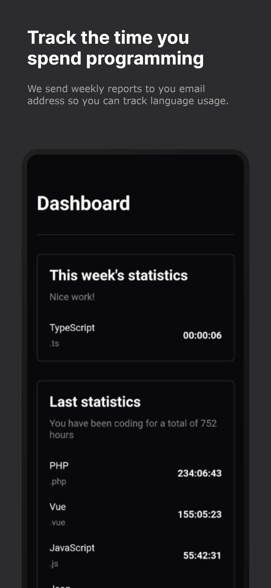

NeovimLangkeeperVS Code

A service. Two editor plugins. The whole loop.Langkeeper
I wanted to know where my coding time went. So I built the tracking service, a dashboard, weekly email reports, and plugins for Neovim and VS Code.